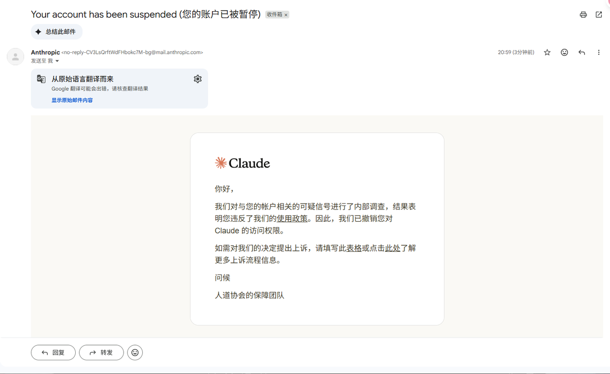
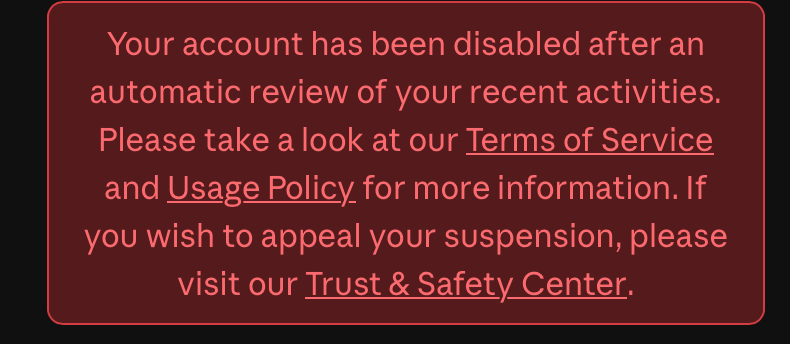
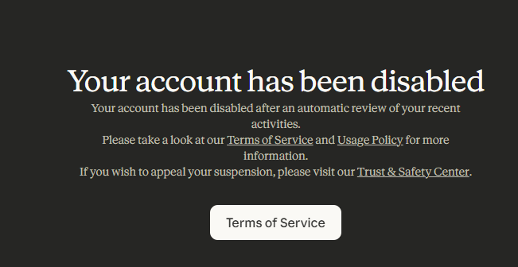

没见过这种种族歧视的AI，傲慢、无理，A畜算是第一家，连老马都看不下去…… 第一次知道香农叫“Claude Shannon”
找Anthropic申诉是有概率成功的，但是由于封号原因是黑箱，只是它的风控系统很严格，从使用到支付，就是只要特征和它认为风险的匹配就开杀，所以解封很难，都不知道为什么被封怎么上诉。除非你问心无愧，从平时使用到支付都编一套人家相信且对的上的说辞，那可以尝试申诉。当然，中文肯定不是什么封禁特征，Claude服务地区也是有新加坡的。
毕竟A/用习惯了，改成codex还是不太适应，用的时间也不短、速度也很慢。实在不行就不折腾了，大不了去跟别人拼反重力Ultra也不是不能用。归根结底还是友商不给力，唉真是好产品不愁卖，可以鼻孔朝天的卖产品😅😅😅

找Anthropic申诉是有概率成功的，但是由于封号原因是黑箱，只是它的风控系统很严格，从使用到支付，就是只要特征和它认为风险的匹配就开杀，所以解封很难，都不知道为什么被封怎么上诉。除非你问心无愧，从平时使用到支付都编一套人家相信且对的上的说辞，那可以尝试申诉。当然，中文肯定不是什么封禁特征，Claude服务地区也是有新加坡的。
毕竟A/用习惯了，改成codex还是不太适应，用的时间也不短、速度也很慢。实在不行就不折腾了，大不了去跟别人拼反重力Ultra也不是不能用。归根结底还是友商不给力，唉真是好产品不愁卖，可以鼻孔朝天的卖产品😅😅😅



@AnthropicAI Your AI hates Whites & Asians, especially Chinese, heterosexuals and men.
This is misanthropic and evil. Fix it.
Frankly, I don’t think there is anything you can do to escape the inevitable irony of Anthropic ending up being Misanthropic. You were doomed to this fate when you
This is misanthropic and evil. Fix it.
Frankly, I don’t think there is anything you can do to escape the inevitable irony of Anthropic ending up being Misanthropic. You were doomed to this fate when you